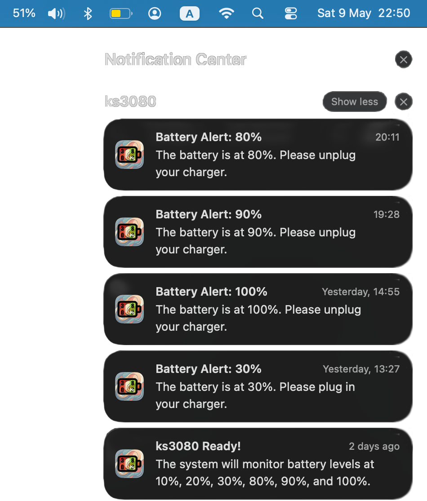
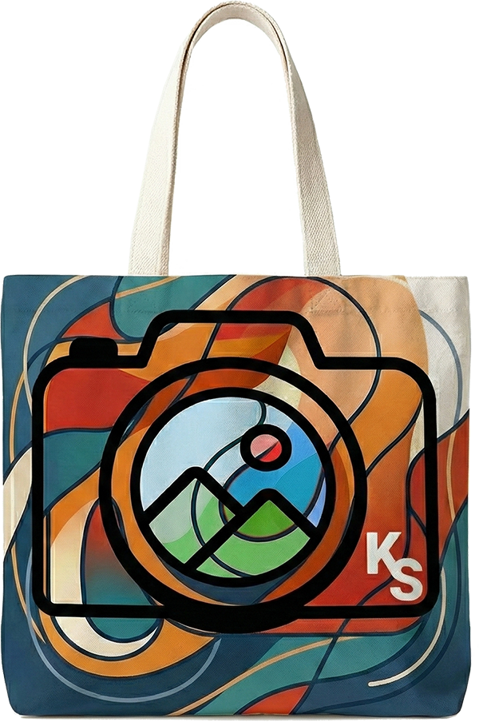

แอปพลิเคชันบน Menu Bar ที่คอยแจ้งเตือนให้คุณชาร์จหรือถอดสายชาร์จในเวลาที่เหมาะสม เพื่อถนอมสุขภาพแบตเตอรี่ โค้ดทั้งหมดถูกสร้างขึ้นโดย AI พัฒนาด้วย Swift แท้ 100%

ซ่อนตัวเงียบๆ บน Menu Bar ตรวจสอบระดับเปอร์เซ็นต์แบตเตอรี่ของคุณแบบเรียลไทม์
แจ้งเตือนอัตโนมัติเมื่อแบตเตอรี่ลดถึงระดับที่กำหนด หรือเมื่อชาร์จถึงระดับที่เหมาะสม
โปรแกรมนี้ถูกออกแบบโครงสร้างและเขียนโค้ดทั้งหมดด้วยเทคโนโลยี AI อันชาญฉลาด
ไม่ได้เปิดหน้าต่างแอปทิ้งไว้ ทำให้กินทรัพยากร CPU และ RAM น้อยมาก
เช็คสถานะจากระบบลึกของ macOS (IOKit) อัปเดตข้อมูลแม่นยำทุกๆ 60 วินาที
พัฒนาด้วยภาษา Swift แท้ๆ เพื่อความเสถียรและประสิทธิภาพสูงสุดบน macOS

กระเป๋าผ้าแคนวาสอย่างดี สกรีนลายไอคอนสไตล์มินิมอล ทนทาน จุของได้เยอะ เหมาะสำหรับใส่ MacBook และ Gadget ของคุณ